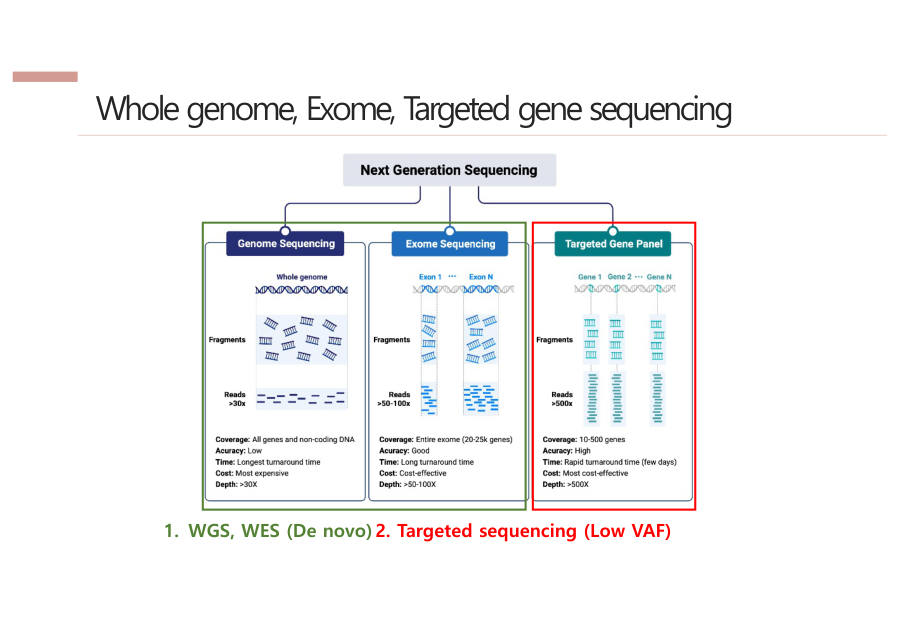

WGS · WES · Targeted — 어디를 읽을까
기계가 한 번에 읽을 수 있는 양은 정해져 있어요. 그래서 "어디를 읽을지"를 정해야 하고, 범위를 정하면 depth가 따라서 정해져요.
페인트 한 통으로 넓은 벽을 칠하면 얇게, 좁은 벽을 칠하면 두껍게 칠해져요. 칠의 두께가 depth예요.
교수님은 이걸 "선택과 집중"이라고 하셨어요.
| 종류 | 읽는 범위 | Depth | 쓰임 |
|---|---|---|---|
| WGS Whole Genome Sequencing | 전체 게놈 (30억 글자) | ~30x | 큰 그림, 처음 보는 변이 찾기(de novo) |
| WES Whole Exome Sequencing | 엑손만 (약 2만 유전자) | 50~100x | 단백질에 관한 변이, 돈 절약 |
| Targeted (gene panel) | 특정 유전자 10~500개 | 500x↑ 암 조기진단 ~3000x | 아주 적은 비율의 변이(Low VAF), 병원 암 진단 |
낯선 말을 풀어 볼게요.
- 엑손(exon) — 유전자 중에서 실제로 단백질을 만드는 설계도 부분이에요. 엑손을 모아 놓은 것이 엑솜(exome)이에요. 나머지 부분(인트론)은 읽지 않으니 돈이 덜 들어요.
- de novo(데 노보) — 라틴어로 "처음부터, 새로"라는 뜻이에요. 부모에게 없던 새 변이, 처음 보는 변이를 말해요.
- Low VAF — 변이를 가진 DNA가 아주 적은 비율만 섞여 있는 상태예요(VAF는 변이 DNA의 비율).
왜 암 조기진단은 3000x나 읽을까요? 초기 암이면 피 속 DNA 중 암에서 나온 DNA가 약 1%뿐이에요. 100번 읽어서는 1번 나올까 말까 해서 에러와 구분이 안 돼요. 아주 많이 읽어야 그 1%가 진짜로 잡혀요.
숫자(30x, 50~100x, 500x↑)는 "정해진 규칙"이 아니라 대표적인 예시라고 교수님이 말씀하셨어요. 시험에서는 이 숫자들로 쓰면 돼요.

기기 처리량이 정해져 있어서 범위를 넓히면 depth가 얕아지고 좁히면 깊어진다. WGS는 전체 게놈을 약 30x로 읽어 큰 그림과 새 변이(de novo) 탐색에 쓰고, WES는 단백질을 만드는 엑손만 50~100x로 읽어 비용을 아낀다. Targeted sequencing은 특정 유전자만 500x 이상(암 조기진단 약 3000x)으로 읽어 비율이 낮은 변이(Low VAF)를 잡으며 임상 암 진단에 많이 쓴다.
넓을수록 얇고(WGS 30x), 좁을수록 두껍다(Targeted 500x↑). 범위 → depth 순서로 30 → 50~100 → 500 이에요.
잠깐 확인 — 같은 기계로 WGS와 Targeted를 각각 돌리면 어느 쪽 depth가 더 높을까요?
Targeted가 더 높아요. 읽을 범위가 훨씬 좁아서 같은 양의 "페인트"를 좁은 벽에 두껍게 칠하는 셈이기 때문이에요.